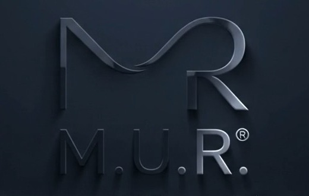

Mesurer
Identifier les signaux et créer un repère personnel.

Descendez pour explorer la vidéo. La molette commande la séquence, dans les deux sens.
Le point de départ : observer les signaux du corps.
Identifier les signaux et créer un repère personnel.
Apprendre à mobiliser ses ressources au bon moment.
Retrouver une réponse adaptée et durable.